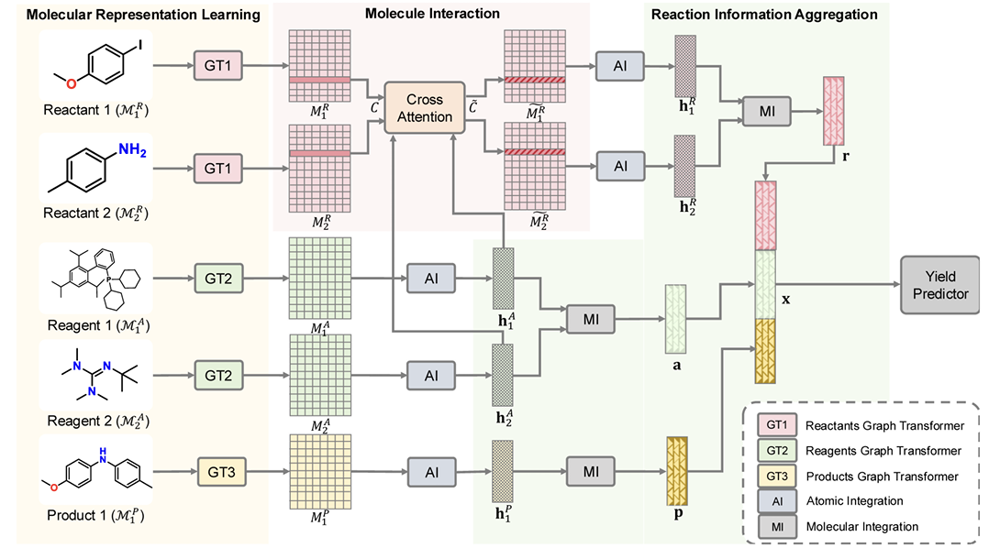
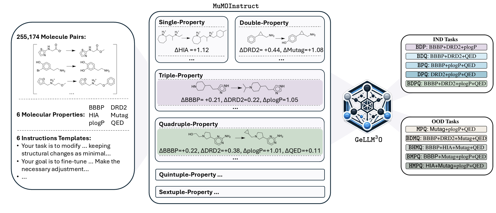
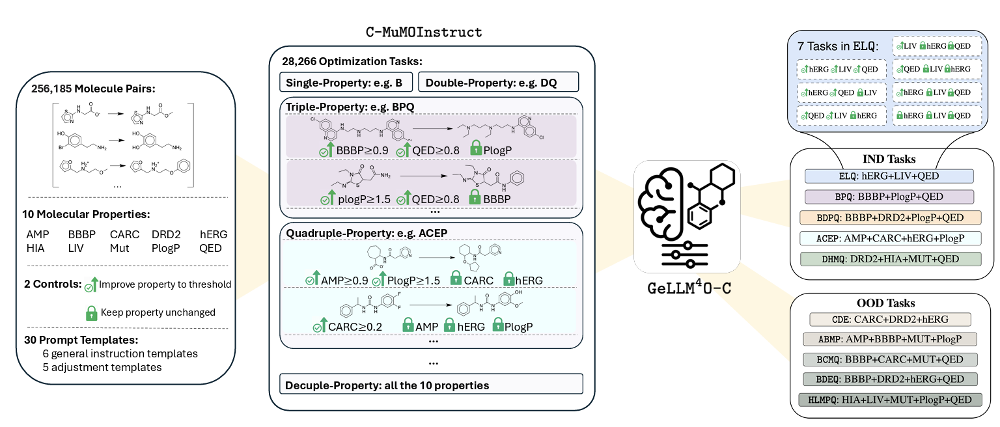
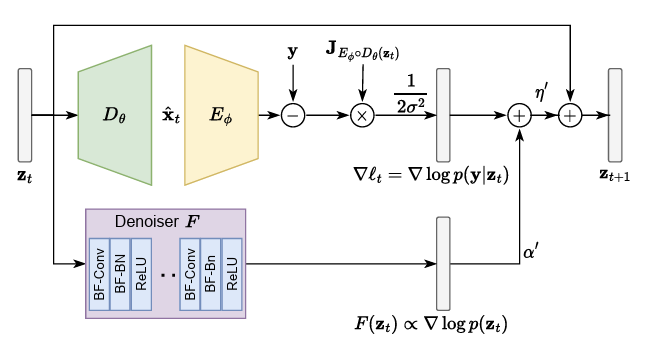

|
Xiao Hu (胡潇) I'm a Computer Science graduate student with 5+ years of research experience developing AI systems across large language models, generative modeling, graph neural networks, and reinforcement learning. My work spans dataset construction, model design, training pipelines, and evaluation. |

|
Education |
|
|
The Ohio State University, Columbus, OH, US M.S. in Computer Science and Engineering (Master out) Sept 2023 – Jan 2026 Advisor: Dr. Xia Ning |
|
|
University of Michigan, Ann Arbor, MI, US M.S. in Electrical Engineering and Computer Science Sept 2021 – Apr 2023 GPA: 3.82/4.0 Advisor: Dr. Hunseok Kim |
|
|
Huazhong University of Science and Technology, Wuhan, China B.E. in Automation Sept 2017 – June 2021 GPA: 3.87/4.0 Advisor: Dr. Ye Yuan |
ResearchI'm interested in generative AI, large language models, graph neural networks, and deep learning. Most of my research focuses on AI for drug discovery (AIDD), with emphasis on instruction-driven molecular optimization, reaction modeling, and scalable dataset construction. Hereis a presentation for my AIDD work. |
|
 |
log-RRIM: Yield Prediction via Local-to-global Reaction Representation Learning and Interaction Modeling
Xiao Hu, Ziqi Chen, Daniel Adu-Ampratwum, Xia Ning Journal of Chemical Information and Modeling, 2025 arXiv / code
We propose a graph transformer framework that jointly models local reaction centers and global molecular context via cross-attention.
The model explicitly captures interactions between reagents and reactive sites, improving generalization across diverse reaction classes.
Experimental results demonstrate consistent performance gains, particularly for medium-to-high yield reactions where interaction modeling is critical.
|
|
 |
GeLLM³O: Generalizing Large Language Models for Multi-property Molecule Optimization
Vishal Dey*, Xiao Hu*, Xia Ning (*equal contribution) ACL, 2025 arXiv / code
We introduce MuMOInstruct, the first large-scale instruction-tuning dataset for multi-property molecule optimization with 255K+ training pairs across 63 tasks.
We develope GeLLMO, a family of instruction-tuned LLMs including both task-specific and generalist variants,
achieving up to 186.6% improvement over baselines and strong zero-shot generalization on out-of-domain tasks—establishing a new foundation for AI-driven drug discovey.
|
|
 |
Large Language Models for Controllable Multi-property Multi-objective Molecule Optimization
Vishal Dey, Xiao Hu, Xia Ning EMNLP, 2025 arXiv / code
We extend instruction-based molecular optimization to controllable multi-objective settings through C-MuMOInstruct with explicit property-specific objectives. The GeLLMO-Cs framework enables precise steering of molecular attributes while maintaining structural validity.
Empirically, it achieves up to 126% improvement in success rate compared to strong baselines.
|
|
 |
Deep Joint Source-Channel Coding with Iterative Source Error Correction
Changwoo Lee, Xiao Hu, Hun-Seok Kim AISTATS, 2023 arXiv / code
We propose an iterative source error correction (ISEC) framework for deep joint source-channel coding systems.
The method progressively refines reconstructions through feedback-driven decoding, significantly improving distortion and perceptual quality metrics.
This work advances reliable end-to-end communication under bandwidth constraints.
|
Website template adapted from Jon Barron